A thin brief, turned into seven business drivers.
The client provided one document, and it was brief. Rather than design to a vague ask, I turned it into an explicit set of business drivers for the app refresh, then grounded everything after that in user pain points and goals.
Written down like this, the drivers did real work. They made it obvious that the app was not a rewards catalogue with a login, it was the programme's whole front door, and that the digital card, enrolment and offer ordering were commercial mechanics rather than screens.
Increase programme awareness and education, and importantly the usage of the Air Miles card during purchases at partners.
The ability to engage with users at the right time, in the right place.
Make the app the go-to channel for all interactions with the programme, which means easy access to the digital card.
Improve and simplify the enrolment process, breaking down as many barriers to adoption as possible.
Push offers to be front and centre of user engagement, with the ability to manage the order in which offers appear.
A seamless single point of contact for Air Miles, holding all aspects of what the programme offers: earn, burn, offers, communications.
Creation of an app that partners, and importantly HSBC, will promote. This is the driver that turns design quality into distribution, which is why it sits last and covers the rest.
Seven problems. Seven goals, one to one.
I mapped the friction in the existing experience straight onto the goals the refresh had to hit, so that no goal existed without a problem behind it, and no problem was left without an owner.
Research first, pixels last.
Five steps, in order, each one narrowing what the design was allowed to be by the time I opened a canvas.
Determined the measurable, relevant expectations behind a brief client document, and restated them as user pain points and goals.
Studied how competing loyalty apps solve the same jobs, to find where this one would fall short.
Captured client and user needs in one document, and found usability issues independently, without needing to run sessions first.
Wireframed the product's flow in Balsamiq to test the usefulness and usability of the functionality.
Designed the interface in Adobe XD, staying true to the existing Air Miles branding, aesthetic and minimal.
The competitive analysis produced four findings I could act on. Make the app aesthetically pleasing with a convenient, simpler interface. Minimise the user's memory load by keeping objects and actions visible rather than remembered. Offer a quick reward at sign-up, so that joining pays off immediately. And one finding that arrived three times over, which is why it is written the way it is below.
Low fidelity: the whole product, before any styling
Thirty Balsamiq wireframes settled the structure while it was still cheap to change. The earn rule, one Dirham spent for one Air Mile, the voucher maths on the redemption screen, in-store redemption by supplier PIN, and the membership barcode were all resolved here, in grey boxes, before a single brand colour was applied.
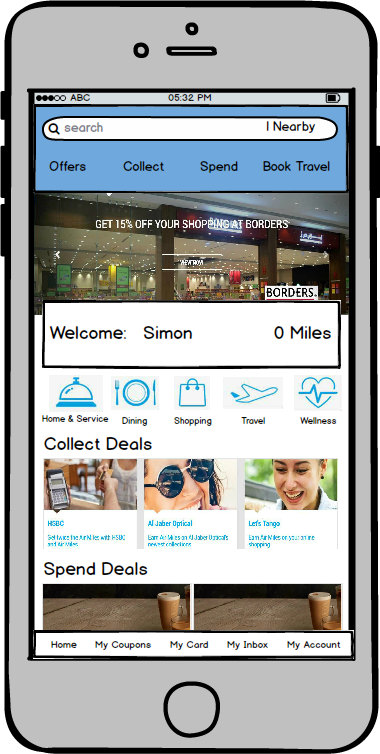
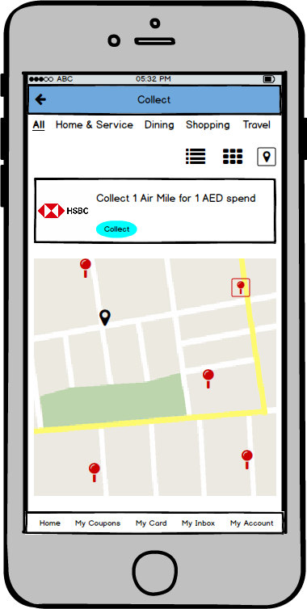
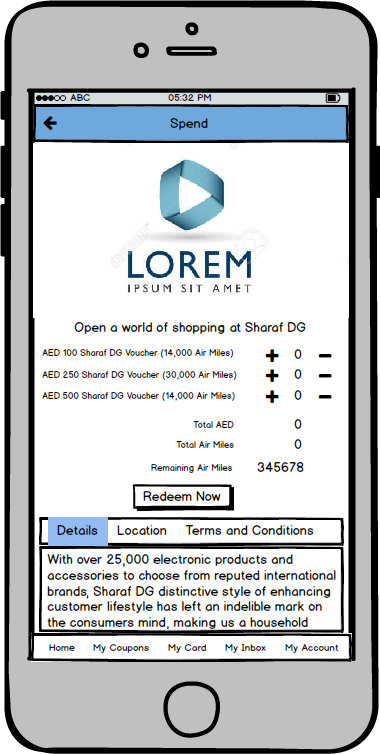
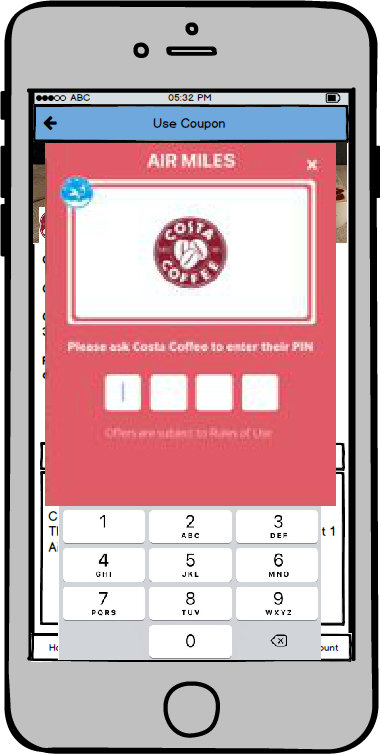
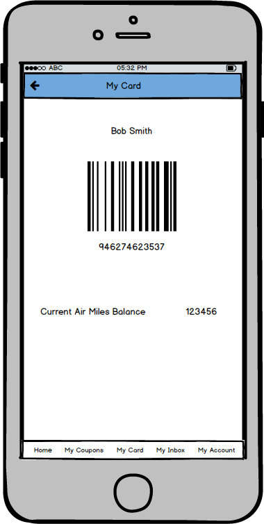
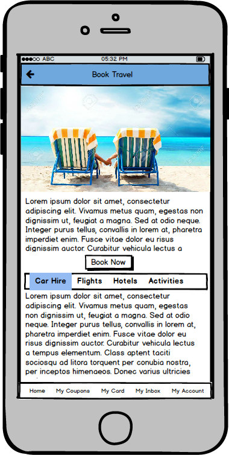
One structure the whole product hangs on.
The site map is the part of this project that does the most work, because it is where the seven drivers stop competing with each other.
Opening the app runs through a splash screen into one of two branches: first-time users get the intro pages, returning users get login, with sign up, forgotten password and a full help layer available before anyone has an account. A welcome pop-up hands over to the logged-in home, which carries location services, search, redeem categories, top offers and notifications, plus the footer into the five core sections.
Offers, Collect, Redeem, My Air Miles and Travel all sit at the same level. Collect and Redeem each run categories into partner detail, and redemption continues into a review step. My Air Miles holds profile, transaction history, vouchers, notifications, settings, and its own copy of the help and legal layer, so support is reachable from either side of the login.

Earning and redeeming, kept close together.
A loyalty programme only works when both halves of the loop are visible at once. Earning without a nearby reward feels like saving into nothing, and rewards without a clear way to earn feel like a shop you cannot afford.
Educate before you ask for anything
The single biggest pain point was that nothing explained the programme. A five-slide carousel now answers it before enrolment: welcome, how collecting works, how redeeming works, what My Air Miles holds, and then get started. It is the cheapest possible fix for two drivers at once, education and enrolment.
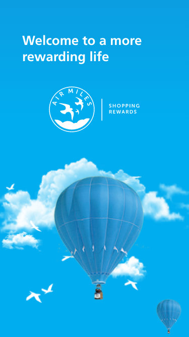
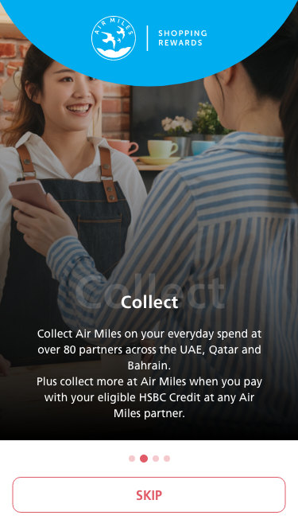
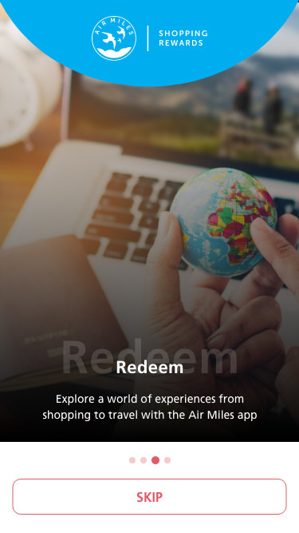
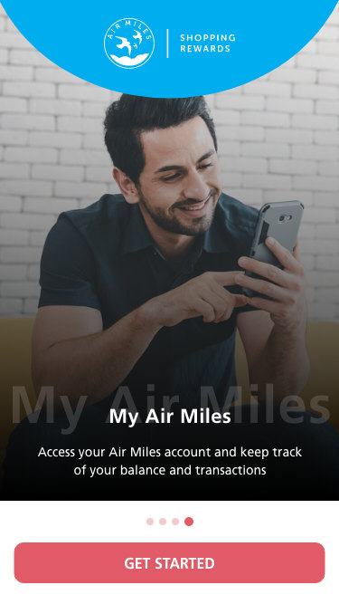
Earn: made local, not abstract
Collect answers the location pain point directly. Category filters narrow the network, a map places partners against where the member actually is, and a nearby card gives the name, the mall or address, the distance and directions. Partner detail then states the earn rule plainly, one Air Mile for every Dirham spent, more at bonus partners, and more again when paying with an eligible HSBC credit card.
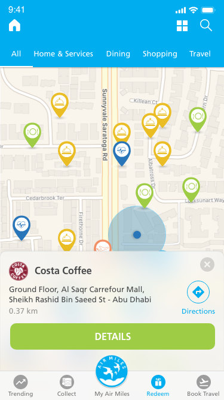
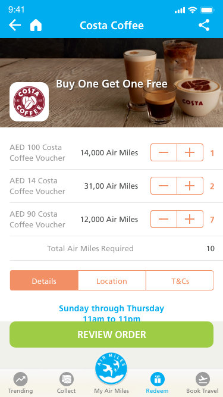
Burn: always confirmed, never ambiguous
Spending miles gets the same weight as earning them, because a redemption is the moment a member finds out whether the programme is real. A partner offer opens into a redemption summary that shows the Air Miles required, the cash value in Dirhams and the balance remaining, then an order confirmation with order numbers, then the voucher itself waiting in the wallet under Available, Used, Expired or Gifts Sent. In store, the partner enters their own PIN to redeem, which is why that screen was designed in wireframe first.
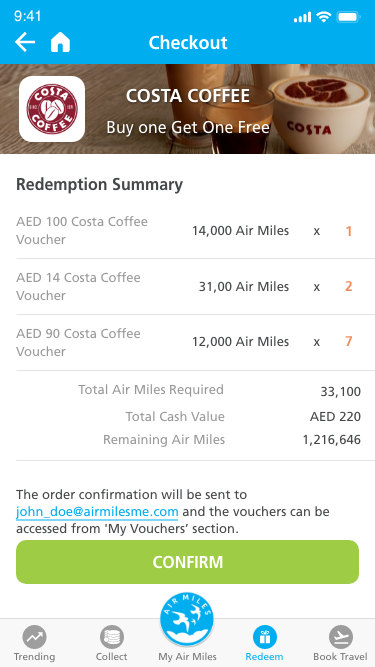
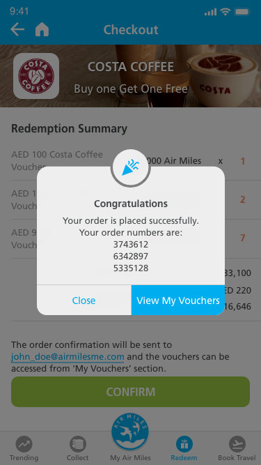
Manage: the card, the balance, and a way to ask
My Air Miles puts the digital membership card first, a scannable barcode one tap away, which is the mechanic behind the card-usage driver. Below it sit the balance, the miles expiring and their date, vouchers, favourites, notifications, transaction history, profile and settings. Sign-in supports fingerprint as well as email and password, and support is localised per market, with its own contact details, phone numbers and opening hours for the UAE, Qatar and Bahrain.
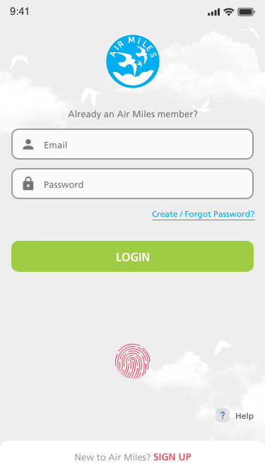
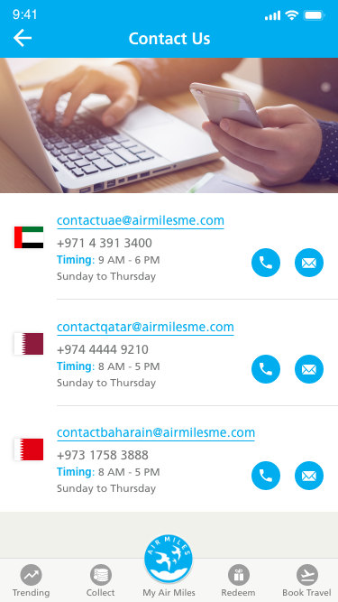
A quiet system, true to the brand.
In high fidelity my note to myself was to stay true to Air Miles' current branding and to aim for aesthetic, minimal design. In practice that meant the interface gets out of the way so the programme can be the loud part.
One brand cyan carries every primary action. The five category colours are used only where the interface genuinely sorts by category, on the home shortcuts and the map pins, so colour stays informative instead of decorative. Type is near-black on white and on a warm off-white surface, with no third neutral introduced.
#00ADEF
#EABD24
#9FCC45
#2975B9
#F38F64
#F1F1EC
Shopping reuses the brand cyan rather than adding a sixth hue, which keeps the category set to five and the palette honest.
Collect, Redeem and Offers share one discovery-to-detail pattern, so learning any one of them teaches the other two.
Every redemption ends the same reassuring way, with the maths shown before the commitment and the voucher visible after it.
A scannable barcode is one tap from anywhere in the app, because in-store card usage was the first business driver.
Vouchers carry Available, Used, Expired and Gifts Sent in one component rather than four destinations.
What I owned, and what it shows.
Business drivers for the app refresh, requirements analysis, competitive analysis, heuristic evaluation, and prototyping at both low and high fidelity. In short, the UX end to end, from interpreting a brief client document through research and architecture to the finished interface.
Turned one thin document into seven explicit business drivers, then held every design decision against them.
One information architecture, one browse-to-detail pattern and one set of states, carrying a programme with earn, burn, offers, travel and account in it.
A calm, minimal interface that stays inside the existing brand, where the loudest thing on screen is always the reward.